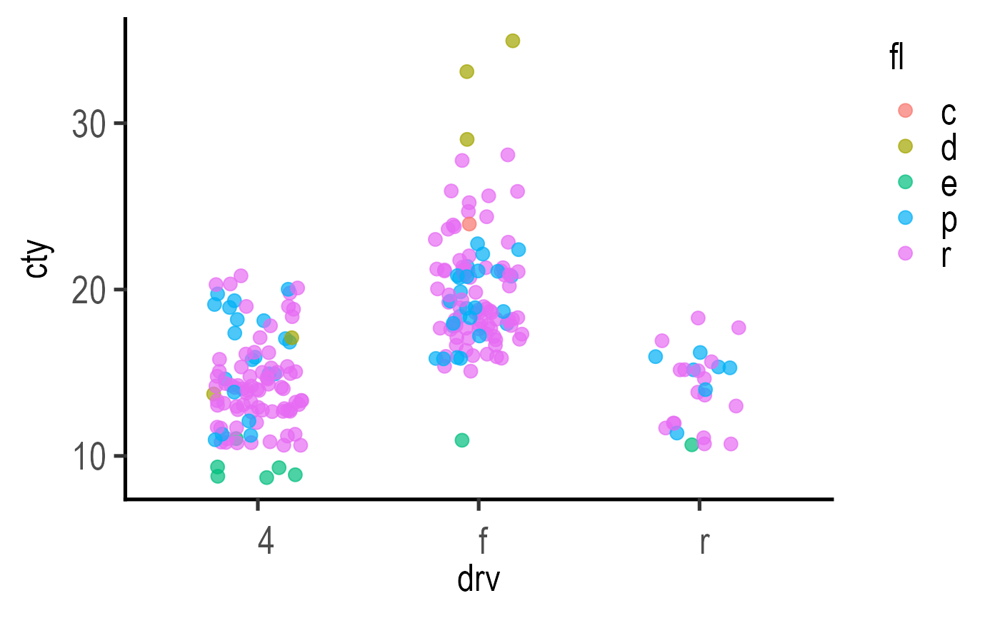

This is a slightly modified theme_classic with two key differences: no border & background for facet panel labels, and font size of text on axes is the same as that of the axes titles (prior to v3.2.0, this was 0.85 times the base font size). The size of text legend title is also same as base font.
theme_grafify(
base_size = 20,
base_family = "",
base_line_size = base_size/22,
base_rect_size = base_size/22,
TextXAngle = 0,
vjust = 0,
hjust = 0,
...
)base font size for all text (default is 20). Other text is relative to this.
default font family
default line size (default is base font size/22)
default size of rectangles (default is base font size/22)
orientation of text on X-axis; default 0 degrees. Change to 45 or 90 to remove overlapping text.
vertical adjustment of X-axis text alignment (between 0 and 1). Set hjust and vjust to 1 if TextXAngle = 45. Try other options if using other angles.
horizontal adjustment of X-axis text alignment (between 0 and 1). Set hjust and vjust to 1 if TextXAngle = 45. Try other options if using other angles.
for any other arguments to pass to theme. A useful one is aspect.ratio = 1 for square plots.
this returns an output with class "theme" and "gg".
Since v3.2.0, theme_grafify produces transparent backgrounds.
ggplot(mpg, aes(drv, cty, colour = fl))+
geom_jitter(width = 0.2,
size = 3, alpha = .7)+
theme_grafify()
